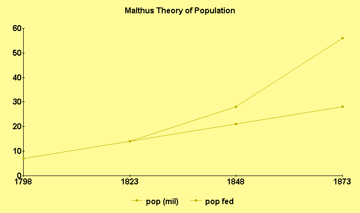

Scarcity
Every discussion of scarcity must make the obligatory reference to Thomas Malthus - that British chap who drew the distinction (1798) between a linear supply curve for the production of food, and an exponential growth curve of the human population.
His Theory:
1. "power of population is indefinitely greater than the power of the earth to produce subsistance"
2. population, when unchecked, increases in a geometrical ratio
3. subsistance only increases in an arithmetical ratio (he is thinking of human agriculture)
=> a strong and constantly operating check on population from the difficulty of subsistence.His data (England), 1798:
 His conclusion (from Bertrand Russell, 1934):
There are, says Malthus, only three ways in which the population can be kept down; they are: moral restraint, vice, and misery. Of moral restraint on a large scale he has little hope until all the population shall have been educated in the true principles of political economy. Of "vice" he cannot, as a clergyman, speak otherwise than in terms of reprobation; moreover, ... he does not expect it, at most times, to be very effective. He proves that the losses caused by epidemics are soon made good, and he concludes that misery is the chief preventive of excessive population. It is because people die of hunger that the population is not greater than it is. (p. 77)
But, it may be said, if there are more people to work the land, it can be made to produce more food. Why then should an increase in numbers cause any one to starve? At this point, the argument depends upon what was afterwards called the law of diminishing returns. ... (p. 77)
Those who form the poorest class in a society must, so Malthus contends, be as poor as is compatible with survival, since otherwise their numbers would increase until that point had been reached. ... It is therefore a good thing that some are richer than others, for, in any system of equality, all would be at the lowest level; on this ground he rejects the schemes of Godwin, Owen, and other reformers. 'It is absolutely certain," he says, 'that the only mode consistent with the laws of morality and religion, of giving to the poor the largest share of the property of the rich, without sinking the whole community in misery, is the exercise on the part of the poor of prudence in marriage, and of economy both before and after it." Malthus thus makes a clean sweep of all schemes of human amelioration which fail to tackle the population problem. ... (p. 78)
There is, he maintains, no right to support: if a man cannot live by his own exertions, or if a child cannot live by the exertions of its parents, the community is under no obligation to provide subsistence. (p. 79)
The advantages to the community which flow from individual selfishness are repeatedly emphasized by Malthus; it is for this reason that a beneficent Providence has made us all such egoists. But the egoism that does good is of a special kind: it is prudent, calculating, and self-restrained, not impulsive or thoughtless. Malthus himself had three children in the first four years of his marriage, and after that no more, owing, on presumes, to "moral restraint." Mrs. Malthus's opinion of the principle of population is not recorded. (pp. 79, 80)
Thus starvation set the limits to economic growth, or to human society as we know it. The model was sophisticated and expanded in work by Jay Forrester (1972) in World Dynamics. Here, however, the notion of moral restraint is cast on those better off who - because of their economic position - are scarfing down everybody else's dinner with their own. Moral restraint is, in either case, an unlikely event.Buckminster Fuller (1980) credits Malthus with the first global model, but refutes his conclusions by the growth of scientific knowledge and what he called "class-one evolution." The plutocrats (Hoover Inst., et al) don't like any notion of monkeying around with markets. They pooh pooh such hand-wringing with the usual argument that they underestimate the technical coefficient of capital. And this has historically proved good in some locations. Mechanization, economies of scale and distribution have staved off starvation for the most part. The rising tide of population has been met with a rising tide of scientific applications. And in any case, nobody is starving in their neighborhood. Admittedly, the models are a little too global in character, and too apolitical. It is easier for someone in Texas to refute Malthus than for someone in Bihar, for example. Moreover, a quarter of the world's population lives in China, operating under some different set of rules from the rest of us.
The basic rule of the price system is scarcity. If everything was as available as air (currently), no price would obtain. A price may arise where scarcity occurs in a specific location - as in the case of water, which is plentiful for the planet but lacking in the Sahara. Similarly, while the planet receives an abundant stream of energy from the sun, its conversion into stocks of petroleum, coal and timber are made scarce by our dependence on them. And, while the planet appears vast enough to anyone who has travelled about, particular areas are made scarce by a lattice work of wire and asphalt. These indicate that scarcity is not a law unto itself, but a subjective relationship of space and time.
The universe, in itself, offers no practical limits. What we call "universe" - all that we can see both day and night - may be only a locality of space/time in a greater scheme. One contemporary notion - an offshoot of inflation theory - is that what we call Universe is only a part of an infinite ocean of universes of greater or lesser duration rising and falling like waves. This resembles Buddhist cosmology which speaks of a three-thousand fold universe - meaning 1,000 to the power of 3, or 1 billion universes - coming and going concurently through eternity.
The mind, too, is just like this. In itself, there is no limit to what one can experience with the mind. Each of us have our unique experiences; a culture shares some common tones; each specie of being has its own range of perception and focus. And the mind accomodates every one of them. The mind doesn't care, really, what you put into it. You can be crazy as a tack or straight as a nail. You can believe in one thing, its opposite, or both at the same time. The mind doesn't care. But we narrow its vastness through the force of habit and attachment and all that we righteously or gullibly believe.
When we speak of scarcity, we are reducing our scope to what is meaningful to us; and the most meaningful of all is the scarcity of one's own life. "There are not enough hours in the day," we say, "There are not enough days in the year." Now another year older, in desperation, we may try to fill our days with stimulation and activities, stash away anything, everything we can lay our hands on. And we can never get enough. Like the squirrel gathering acorns for winter, most of us are saving up for retirement, enfeeblement or death. For most of us, this is the real meaning of scarcity.
But this desperate consumption is also a fabrication of social myths. We invest so much meaning in what we own. As Weber (1927) stated, "only a human lifetime in the past it was futile to double the wages of an agricultural laborer in Silesia who mowed a certain tract of land on a contract, in the hope of inducing him to increase his exertions. He would simply have reduced by half the work expended because with this half he would have been able to earn twice as much as before" (Weber, pp354, 355) Today, by comparision, there is never enough. And by this notion, scarcity is multiplied: we spend so much time pursuing things we have even less time than before.
In so-called civilized societies it is the poor who spend their days in an anxious search for the means to live and the rich who can indulge in gratuitous activities; but when we compare rich and poor societies, the reverse often appears. The isolated communitites, when they were discovered and brought into the frame of reference to national income per-head, were placed very low on the scale, yet for many of them the proportion of energy, skill and mental activity devoted to non-economic aims was much greater than it is with us. (Robinson, 1970, p25)
One of the richest experiences I have had - that stands out in my memory - is a large wooden porch in front of the store in a small mountain town; sitting on the bench there, as folks wandered in and out through the wire-spring screen door. Large wooden porches are pretty much a thing of the past, but it used to be quite popular to wave to your neighbors as they passed, a generation ago. Now we use surveillance cameras in front of rod iron, to protect - you know - all these things.
They're very meaningful to us - these things. To us, to our friends and family and people at work, and people we pass on the road - these things signify our life. If you were to look around your room right now - assuming the room is somewhat your own - the objects around you tell a story - a personal history, a relationship to yourself. Just as you create meaning into your environment, so do you define yourself by things.
And the reason for this is very simple. We are relational beings, not isolated blocks of wood floating around in space. We are seeing- hearing- tasting- smelling- touching- thinking beings, which is to say, concious beings. We are related to all things - subject to object - intimately, as neither can exist alone. (At least, as far as we know.) That we even have a notion of being indicates a consciousness of it, of all these things that make up our experiences - whether we own it or not, whether it moves with us - like a thumb or thigh - or whether we leave it behind like a neighbor. All these compounded consciousnesses of being is the very stuff I call my "self." Or, this is how it seems to me.
Contemporary economics would like to avoid all this of course. It doesn't want to acknowledge consciousness anymore than modern psychology will admit a psyche. Economics can only speak of "utility" when discussing objects - a purely mechanistic view, like something internal to an object. It doesn't even want to admit to desires, wants or wishes, but can only quantify "demand" which sounds really spartan. What bunk! Check it out yourself. A cup on a shelf in a store is not the same as a cup on a shelf at home. That junk in the attic is infinitely more valuable than the same junk at a public landfill. One has a relationship to me, while the other does not.
And so like magicians we continuously redefine ourselves with the objects of our experience. The more we stack up around us, we create kind of a buffer - an illusion of safety and stability in a changing world. It is an illusion, after all. No matter how much we lubricate, keep dusted or locked up, much as we fuss and fight it, things have a way of wearing down or walking off. It isn't sinister or mean - this stuff - it just doesn't really exist the way we want. Even were we to run off to replace it - a new home, new car, new wife - won't help for long. And even for the time it did, we would be hankering for something else.
This is the psychology of scarcity, you see - Gestalt psychology. One thing emerges from within the field of our experience - moves front and center - some need or want. And when we satisfy that experience, a new one emerges. We eat until full, and then we need a nap. When we wake, we're off to the races to find gratification in some other far flung thing, which makes us hungry again. In this respect, Malthus is certainly right - we can never eat enough.
We eat and eat and eat and eat and sleep and sleep and sleep, scratch, sniff, snort and sneeze, time after time without end, and we never find any lasting satisfaction. Some would say this recurs lifetime after lifetime for as long as we can imagine, but in any case it is true for all of us here. So maybe it isn't things we really want. Maybe what we want is more like happiness - a subjective condition - which we can only try to approach with these things.
What is happiness, then? Freedom from fear, from torment and terror. Freedom from conflict both inner and outer. Freedom from stress and struggle. Freedom to express and consider. Happiness has to be a little related to these. We all need food, to be sure - a condition of ourselves as relational beings - we are not self-contained or -sufficient; we cannot exist alone. But can we exist without conflict? Can we work without effort, and live without fear? Wouldn't this make you happy?
Freedom in its broadest sense means existing without limitations, like if we were to drop all boundaries and barriers. Already there is fear - isn't there. What would this be like? Here comes the Hobbsian man - the felon, the mad murderer-lawyer-rapist. That is our prediction - our anxiety. Maybe, though, it would be more like Jesus, Buddha, Lao Tzu or Guru Nanak Dev. Maybe Einstein or Planck, Mozart or Monet. Our mind follows our attention - if we focus solely on money we can get rich; if we focus solely on benefiting all others, we can become enlightened.
We need both courage and reason to move beyond our narrow spheres of fear, and our notions of time and scarcity of things. Scarcity is an aspect of causality. If we plant only onions, we can expect a scarcity of potatoes, for example. If we put all our time into surfing the web - or invest solely in the new information age - we can expect to get a little hungry. But the information age does offer the potential to dissolve barriers, or it may not, depending upon our interests. And, since you have managed to read this far - instead of browsing for porn - you have justified my hope. By you, humanity can make it. And we can make it good.
Oh yeah. Those forecasts - by the way - of Malthus and others are true for a lot of people and other species. And you are responsible to do what you can to save them. But you are responsible to do much more - to make them free and happy.
Links